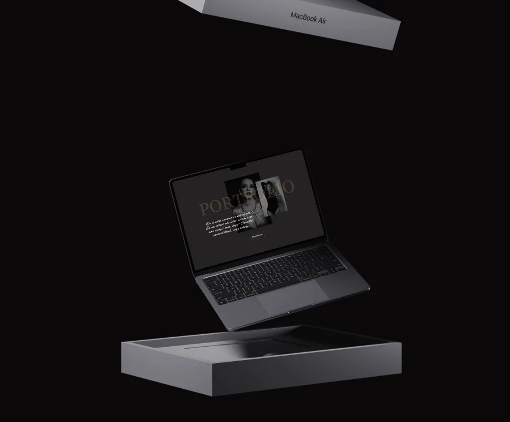
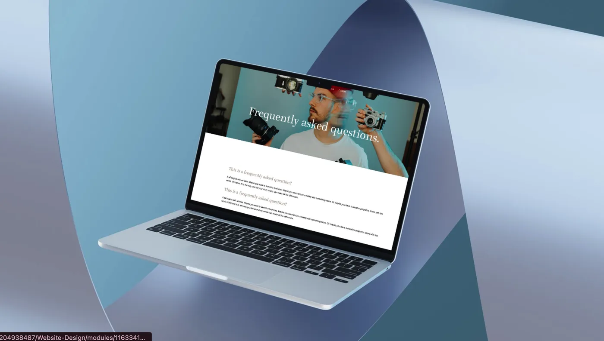
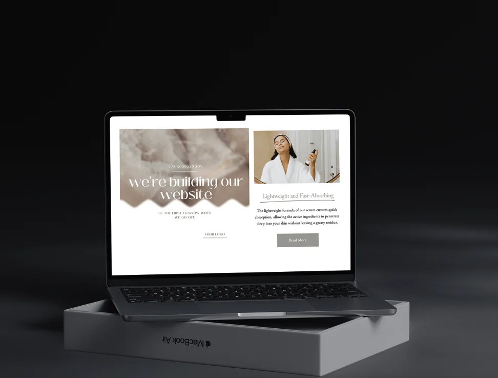

Weboldalkészítés kódolás nélkül – könnyen, érthetően.
Ezek a sablonok nemcsak előre elkészített megoldások, hanem rugalmas alapok egy saját weboldalhoz. Szinte minden részlet alakítható – a színek, a betűtípusok, az elrendezés –, így az oldal könnyen igazítható a saját igényeidhez.
Back-

Portfólió sablon
Tökéletes bárkinek, aki szeretné bemutatni a portfólióját anélkül, hogy nulláról kezdene.
-

Fotós portfólió sablon
Ez a sablon segít abban, hogy a fotóidra essen a hangsúly – semmi fölösleges, csak letisztult megjelenés és jól átgondolt elrendezés.
-

Webshop sablon
Egy kész webshop alap, amibe csak a termékeid hiányoznak.
A weboldal sablonjaim előre elkészített alapok, amelyekkel könnyedén elindíthatod az online felületed. Kb. öt változat közül választhatsz, de ha személyre szabott megoldást szeretnél, egyedi sablont is készítek 1–3 napon belül. A tartalmakat bármikor szabadon módosíthatod. Hamarosan elérhetők lesznek az Etsy oldalamon. Minden sablont átgondoltan, letisztult stílusban terveztem, hogy egyszerű és látványos élményt nyújtson. Ha kérdésed van, írj nyugodtan – örömmel segítek. Addig is a legjobbakat kívánom, és köszönöm, hogy a Divine Inborn Studio része lehetett a digitális történetednek! ♡